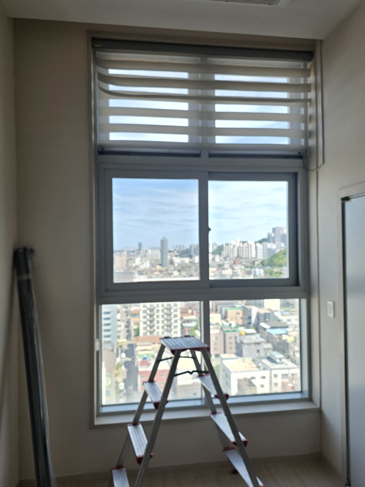
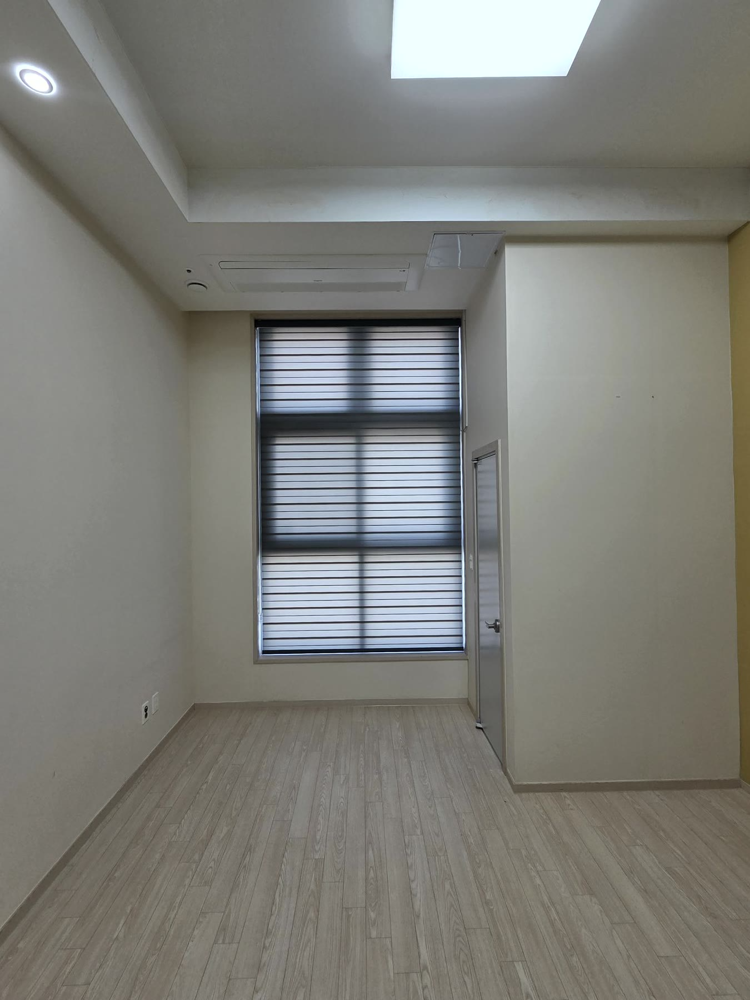

2026년 6월 7일 시공
포항 대잠동 오피스텔
진그레이 콤비블라인드 시공후기

현장 상황 — 세입자 입주 전 교체
포항 대잠동의 한 오피스텔입니다.
임대를 놓는 곳이라, 새 세입자가 들어오기 전에 블라인드를 새로 바꾸고 싶다는 요청이었습니다.
가서 보니 이유가 분명했습니다.
원래 달려 있던 블라인드가 세월이 지나 원단이 삭고 변색된 상태였습니다.
햇빛에 오래 노출되면 원단은 결국 바스러지는데, 첫인상이 중요한 임대 공간에는 특히 걸리는 부분입니다.

이 오피스텔은 천장이 높아 창도 시원하게 큰 편이었습니다.
창이 크면 블라인드의 존재감도 그만큼 커서, 낡은 게 달려 있으면 공간 전체가 칙칙해 보입니다.
반대로 깔끔한 제품을 달면 방이 확 살아나는 창이기도 했습니다.
진그레이 콤비블라인드를 고른 이유
색은 진그레이 콤비블라인드로 잡았습니다.
오피스텔처럼 임대용 공간은 무난하면서도 세련된 색이 좋습니다.
진그레이는 어떤 가구·벽지에도 무난하게 어울려서, 어느 세입자가 들어와도 튀지 않고 깔끔하게 유지됩니다.
콤비블라인드는 비치는 원단과 막아주는 원단이 번갈아 있어, 각도만 살짝 돌리면 채광과 시선 차단을 자유롭게 조절합니다.
낮에는 은은하게 빛을 들이고, 필요할 때는 각도를 닫아 확실히 가립니다.

시공 디테일
천장이 높은 큰 창이라 윗부분 작업은 사다리를 놓고 진행했습니다.
높은 창은 시공에 손이 더 가지만, 그만큼 완성됐을 때 라인이 시원하게 떨어져 보기 좋습니다.
낡은 블라인드를 걷어내고 진그레이로 새로 다니, 방 분위기가 한결 정돈됐습니다.
오피스텔·임대 공간 블라인드, 이런 분께 추천드려요
세입자 입주 일정에 맞춰 빠르게 교체가 필요한 임대 오피스텔.
천장 높은 큰 창이라 낡은 블라인드가 유독 눈에 띄는 공간.
어떤 세입자가 들어와도 무난한, 튀지 않는 색을 원하시는 경우.
포항을 포함한 대구·경북 전 지역 오피스텔·임대 공간 블라인드 교체를 도와드립니다.
비슷한 시공이 필요하신가요?
창 사진 한 장이면 대략 견적을 받아보실 수 있습니다. 부재 시 문자를 남겨주시면 빠르게 답변드립니다.
대구권 정실장 010-5495-9500 경북권 이실장 010-2825-7275